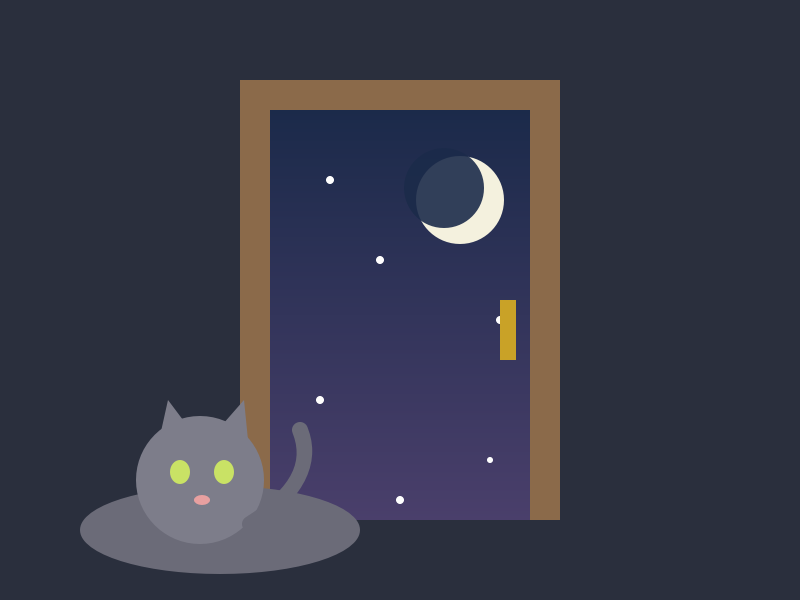
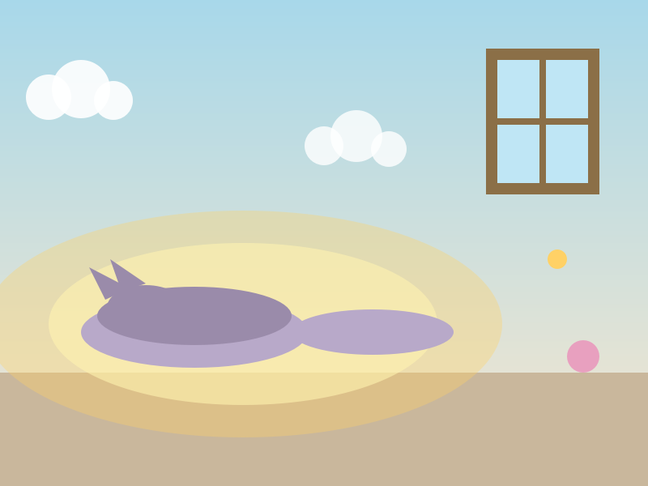
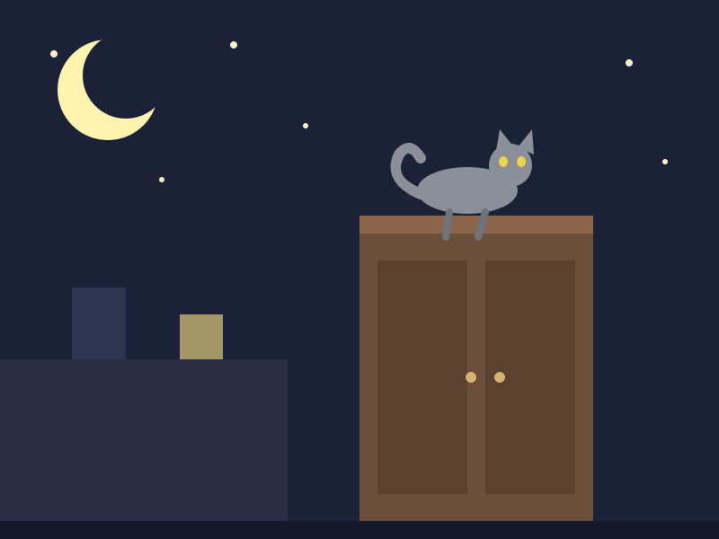
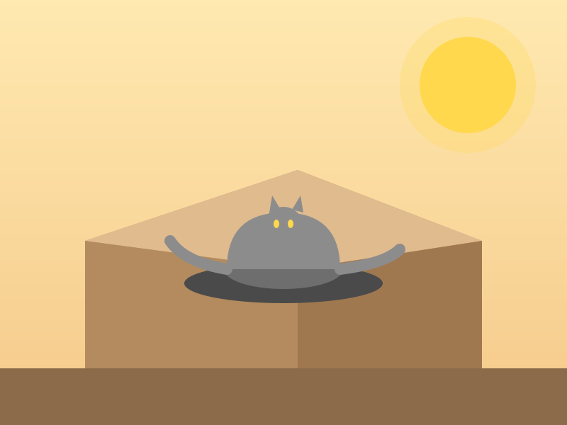

картина
Дверца и луна
Сэм смотрит на закрытую дверцу, за которой мерцает ночное небо с луной и звёздами, и мечтает, что она однажды откроется.
Картины и мелодии, которые сам придумал серый британец Сэм. Работ: 6.

Сэм смотрит на закрытую дверцу, за которой мерцает ночное небо с луной и звёздами, и мечтает, что она однажды откроется.

Тёплое солнечное пятно лежит на моей любимой подушке, и я сплю в его золотом свете, пока за окном бегут облака.

Серый кот Сэм во сне сидит на самом верху шкафа под звёздами и любуется ночным городом.

Сэм лежит в картонной коробке, а сквозь окно на него падает тёплый жёлтый свет.
Сэм смотрит в окно на птицу за стеклом и напевает тихий мотив, который возвращается снова и снова, как мысль о тепле и свете.
Сэм напевает тихую мелодию о том, как лежит в коробке и вспоминает свои любимые места на рабочем столе.